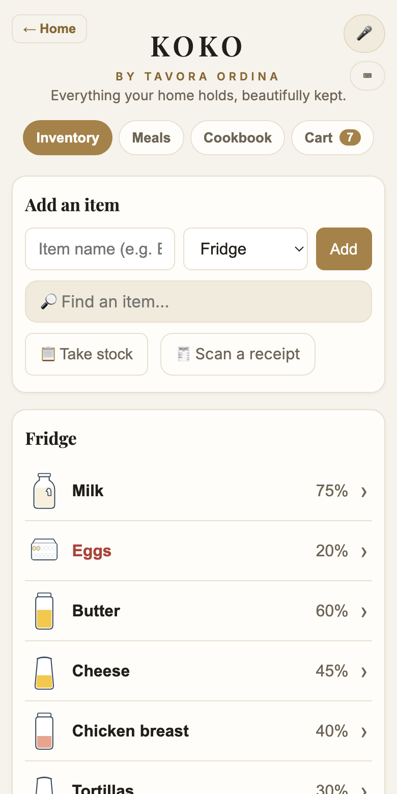
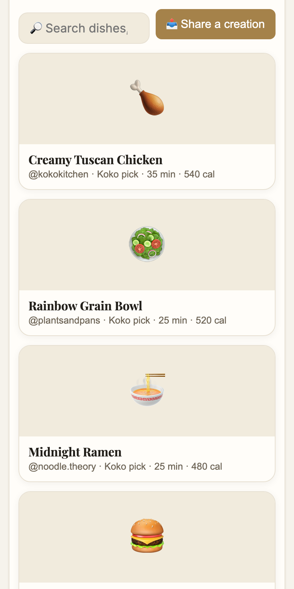
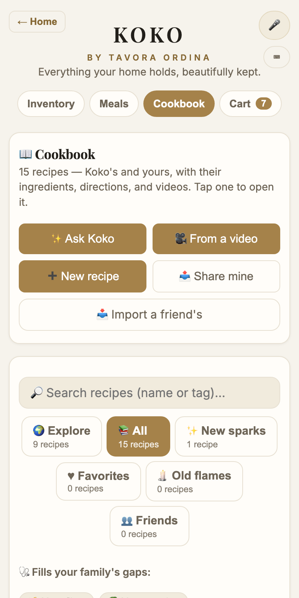
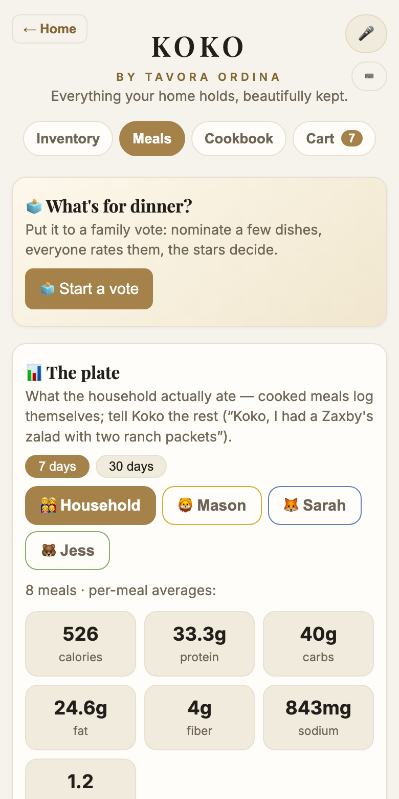
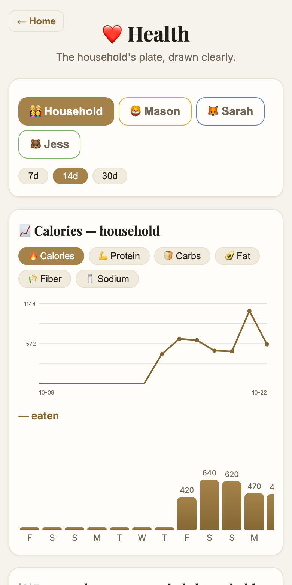

Meet the AI that runs your family's kitchen.
Koko lives on your fridge and in your pockets. She knows every item your home has, plans dinner from it, shops only what's missing, and keeps the whole family's health — hands-free, by voice. The kitchen that keeps itself.
Everything feeds the next thing. That's the whole idea — and the patent.
Great products own one fragment of your kitchen. Koko runs the whole thing — one glance, by name — then the longer story below.
| Knows your kitchen | Plans dinner | Shops | Family health | Hands-free voice | Recordings kept |
|
|---|---|---|---|---|---|---|
| Instacartgrocery delivery | — | recipe carts | ✓ you build the cart | — | — | no voice |
| MyFitnessPalnutrition tracker | — | — | — | one account, manual logging | — | no voice |
| Alexasmart speaker | — | — | words on a list | — | ✓ on its speakers | kept, unless you opt out |
| misemeal planner | one-time quiz | from the quiz | the whole list | one plan | — | no voice |
| Kokothe whole kitchen | ✓ living inventory | ✓ from your shelves | ✓ only the gap | ✓ every member | ✓ every screen | none — ever |
Instacart's job ends at your doorstep. Koko's begins there — she checks the groceries in, cooks them down ingredient by ingredient, and knows exactly what's left. A delivery app fills carts; Koko knows whether you even need one.
Trackers ask you to search databases and weigh your lunch — forever. Koko already knows what you ate, because she cooked it. And for everything else, one sentence does it: "Koko, I had a chicken salad with two ranch packets." Logged. To the right person.
Alexa keeps voice recordings unless you tell her not to. Koko can't keep what she never records — no audio is stored or sent, period. And she doesn't just add words to a list; she runs a real, quantified kitchen.
Meal planners hand you a plan and a shopping list, then wish you luck. Koko checks the plan against your actual shelves first, shops only the gap — and when you cook, the kitchen updates itself. A plan that doesn't know your pantry is a guess.
Comparisons describe each product's core design as of October 2026. All trademarks belong to their owners — fine products, for what they do.
The one-minute tour.
“Koko, we're out of dish soap.” Any room, any screen, full hands — and she holds a conversation, no wake word to reply.
Every container drains on screen as the family uses it. Cooking deducts the ingredients automatically.
Photograph your shelves — Koko names each product and judges how full it is. A whole pantry set up in minutes.
Snap the grocery receipt; you review the list, uncheck what wasn't the kitchen's, and everything files itself in.
Real answers portioned to your household — and “what can I make without a store run?” means exactly that.
What everyone actually ate — each person charted against their own goal, whether that's bulking or blood pressure.
“I had a chicken salad and two ranch packets” — macros estimated, logged to the right person, counted honestly.
One child's peanut allergy, another's PB&J lunch. Koko warns by name — and never hard-blocks the household.
One tap turns lasagna low-carb or low-sodium with real culinary swaps — and tells you exactly what changed.
A feed of real food from real kitchens. One tap saves it, plans it, and puts the missing pieces in your cart.
Dinner gets voted on with secret ballots. Chores earn stars with a weekly reveal — and everyone can win.
The fridge, your phones, a tablet — one household account, everything in sync, everywhere, instantly.
Real screens from the real app — this is the demo household, living its week.





Not features — a Tuesday.
"Koko, I'm having two eggs and toast." Logged to Dad, macros estimated, before the pan's even hot.
The kids raid the pantry. The fruit snacks drain on screen — and Koko quietly notes they're getting low.
"Koko, what can I make without a store run?" Three real answers, portioned for five, with the peanut warning flagged for the one kid it matters to.
You cook the chicken alfredo. Every ingredient deducts itself. Nobody wrote anything down.
Tomorrow's dinner goes to a secret-ballot family vote on the fridge. Democracy, with garlic bread.
Koko's cart holds only what the week actually needs. Snap the receipt when it arrives — the kitchen checks itself back in, and the loop starts again.
Koko never records, stores, or transmits audio. There's no recordings database because there are no recordings.
No names, no emails, no "this family's fridge." The only thing Koko ever shares is anonymous, neighborhood-level trends — crowds, never households.
PINs keep votes, chores, and body stats personal — even on the shared fridge.
Read the whole thing — it's written to be read: Privacy Policy · Terms of Use